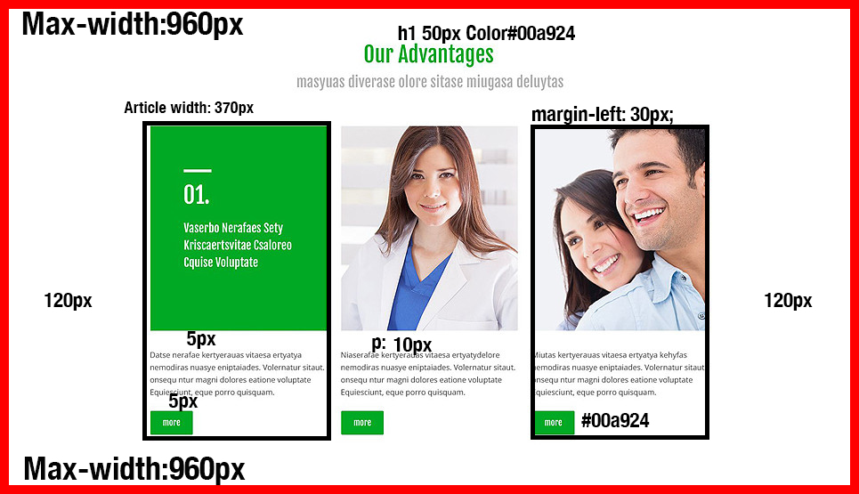

HEADER
HEADER
This header component is a nice clean header that is designed for a Construction company.The logo is simple and yet it is very appealing to the user, The colors are very business oriented and really communicates to the user professionalism. Users are able to access the site through the main nav that is directly to the right. You can also go back to the main site by clicking the logo.
CONTENT VISUALIZATION
The header component contains the logo(img,h1) and the main nav(Navigation) that has nested links that will let you navigate through out the site.
View ComponentNEWS

ABOUT
This about component is a simple and modern layout of colors and images that is aimed at communicating to the user the different services that is offered. Users are given a short description followed by a Read More button.
CONTENT VISUALIZATION
This (section,article),begins with three articles set inside a section. Each article is displayed with an h1 tag for the title.Then there is a featured image with a caption or paragraph tag. at the bottom is a (input,button).
View ComponentFEATURES
FEATURES
This featured component is designed and helps the user engage in the information that is provided.Users are able to click each article and learn more about each one from the button at the bottom.
CONTENT VISUALIZATION
The (section,article) begins with (h1) tag in green color hex code #00a924 50px top. Followed by a paragraph tag.There are three separate articles within this section each article width of 370px wide with about 120px margin. Each article has a featured image with a paragraph tag containing a description. At the bottom there is a (input,button) more, that is linked to another piece of this site pertaining to that particular article.
View ComponentFOOTER

FOOTER
This footer is a modernized and very informative footer. This footer contains all the necessary information that the user would need to contact the company/ business. This would include Social networking links, address, telephone, and even a Google map pinpointing the exact location making it easier for the user to locate them.
CONTENT VISUALIZATION
The first thing that stands out is the Google map with a max width of about 370px.This is capable by using the Google map API. The next part of this are the social networking links that nest the links to the companies social footstep . This is done by using Font-awesome. Next there are two paragraph tag's that help display address and phone number. At the very bottom is the copy right information along with an anchor tag with the Privacy Policy.
View ComponentCTA

CTA
This call to action is designed to capture the users attention and focusing it on a specific action. For this particular CTA it prompts the user to click and learn more. .
CONTENT VISUALIZATION
This component(section), begins with an h2 tag followed by two (p) tags.floated to the left of the paragraphs is a featured image that has a radius to the entire image shaping it into a rounded square. At the bottom of the (section) there is your (button) that will lead you to the learn more page.
View Component